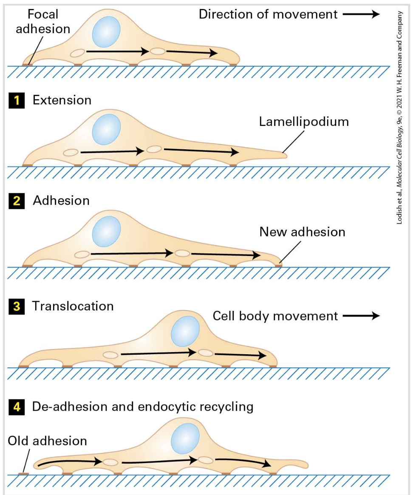

1. Movement and Force Generation
Cell migration is driven by dynamic changes in the cytoskeleton, especially at the leading edge of the cell where rapid actin remodeling occurs. One of the key structures involved is the lamellipodium, a flat, sheet-like extension rich in branched actin networks. These structures push the cell membrane forward through continuous cycles of actin polymerization and depolymerization, allowing the cell to explore and move through its environment.

Inside the cell body, stress fibers composed of actin and myosin generate contractile forces. These fibers function like internal cables, allowing the cell to pull its rear forward after the leading edge has extended. Together, these pushing and pulling forces create coordinated movement that is essential for processes such as wound healing and immune cell response.
2. Adhesion and Cellular Polarity
For a cell to migrate effectively, it must constantly attach and detach from its surrounding environment. This is controlled by focal adhesions, which are complex protein assemblies that physically link the cytoskeleton to the extracellular matrix. Integrins act as key receptors in this process by transmitting signals between the outside and inside of the cell.
As migration continues, new focal adhesions form at the leading edge while older ones disassemble at the trailing edge, creating a cycle of attachment and release. At the same time, the cell establishes polarity, meaning it defines a clear front and back. The microtubule-organizing center (MTOC) plays a major role in positioning cellular components to support directional movement and ensure that the cell moves in a consistent direction.
3. Directional Signaling and Transport
Cell migration is also guided by internal transport systems that organize the distribution of proteins and organelles. The Golgi apparatus sorts and packages proteins into vesicles, which are then transported along cytoskeletal tracks. Motor proteins such as kinesin and dynein move these vesicles in specific directions, ensuring that materials are delivered to the correct part of the cell.
In addition to internal organization, external chemical signals strongly influence migration. Gradients of chemoattractants and growth factors activate signaling pathways such as calcium signaling, which helps the cell detect direction. This process, known as chemotaxis, allows cells to move toward beneficial environments or injury sites, making it essential for development, immune response, and tissue repair.